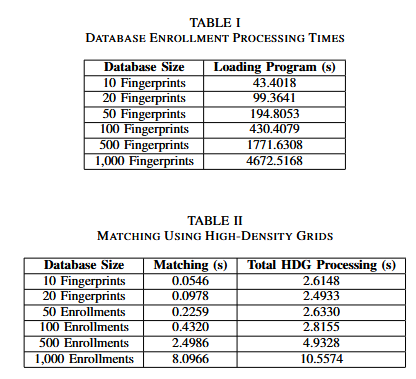

High-Density Grid-Based Fingerprint Recognition
Project Summary
This research project proposes a fingerprint recognition algorithm that improves speed and security using a novel High-Density Grid-Based Matching technique. Rather than storing the full fingerprint image, the system focuses on small, data-rich segments of the fingerprint to minimize risk and optimize efficiency.
Key Highlights
- Storage Efficiency: Only the top seven 80x80 high-density pixel segments of the fingerprint are stored, greatly reducing biometric data exposure.
- Improved Security: Selective data storage limits risk if database compromise occurs.
- Performance Gains: Testing showed 20–30% faster recognition by focusing on regions with high minutiae density.
Visuals


Research Paper
The paper, titled High-Density Grid-Based Matching Versus Global Matching, was formatted in IEEE style and outlines the methods, evaluations, and improvements proposed by the new algorithm.